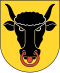
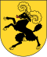
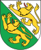
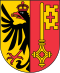
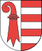

| Brasão | Abr. | Cantão | Adesão | Capital | População | Língua Oficial |
|---|---|---|---|---|---|---|
| ZH | Zürich | 1351 | Zürich | 1 284 052 | alemão | |
| BE | Bern | 1353 | Bern | 958 897 | alemão, francês | |
| LU | Luzern | 1332 | Luzern | 359 110 | alemão | |
 |
UR | Uri | 1291 | Altdorf | 34 948 | alemão |
| SZ | Schwyz | 1291 | Schwyz | 138 832 | alemão | |
| OW | Obwalden | 1291 | Sarnen | 33 755 | alemão | |
| NW | Nidwalden | 1291 | Stans | 40 012 | alemão | |
| GL | Glarus | 1352 | Glarona | 38 084 | alemão | |
| ZG | Zug | 1352 | Zug | 107 171 | alemão | |
| FR | Freiburg | 1481 | Freiburg | 258 252 | alemão, francês | |
| SO | Solothurn | 1481 | Soleura | 248 613 | alemão | |
| BS | Basel Stadt | 1501 | Basel | 184 822 | alemão | |
|
BL | Basel Landschaft | 1501 | Liestal | 267 166 | alemão |
 |
SH | Schaffhausen | 1501 | Schaffhausen | 73 866 | alemão |
|
AR | Appenzell Ausserrhoden | 1513 | Herisau | 52 509 | alemão |
|
AI | Appenzell Innerrhoden | 1513 | Appenzell | 15 300 | alemão |
|
SG | St. Gallen | 1803 | St. Gallen | 461 810 | alemão |
|
GR | Graubünden | 1803 | Coira | 187 920 | alemão, romanche, italiano |
| AG | Aargau | 1803 | Aarau | 574 813 | alemão | |
 |
TG | Thurgau | 1803 | Fraunfeld | 235 764 | alemão |
| TI | Tessino | 1803 | Bellinzona | 324 851 | italiano | |
| VD | Vaud | 1803 | Lausanne | 662 145 | francês | |
| VS | Valais | 1815 | Sion | 294 608 | francês, alemão | |
|
NE | Neuchâtel | 1815 | Neuchâtel | 168 912 | francês |
 |
GE | Genebra | 1815 | Genebra | 433 235 | francês |
 |
JU | Jura | 1979 | Delémont | 69 292 | francês |
| CH | Suiça | - | Bern | 7 508 739 | alemão, francês, italiano, romanche | |
| Total de Habitantes |